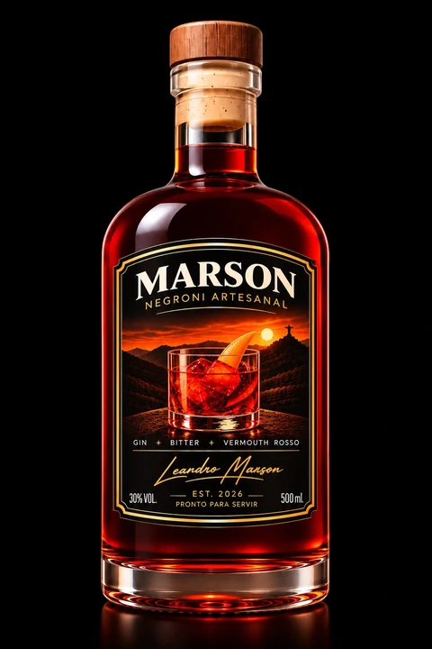
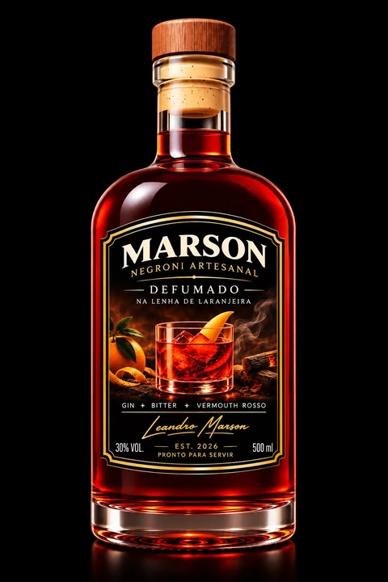

A expressão original

Negroni Marson
Clássico
A elegância da receita original. Gin, bitter e vermouth rosso em um negroni artesanal pronto para servir.
Pedir o Clássico
A coleção de Negroni Marson
Gin, bitter e vermouth rosso.
O encontro de um clássico com a
personalidade de quem o escolhe.

Negroni Marson
A elegância da receita original. Gin, bitter e vermouth rosso em um negroni artesanal pronto para servir.
Pedir o Clássico
Negroni Marson
A tradição ganha outra presença. A versão defumada na lenha de laranjeira, com uma assinatura própria.
Pedir o DefumadoDeslize para conhecer as duas versões
Escolha o seu. Consulte valores e disponibilidade no atendimento oficial.